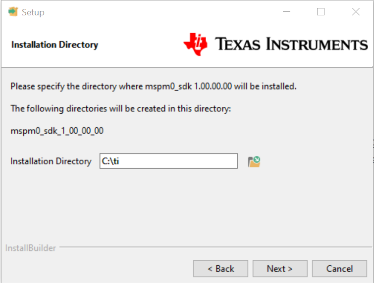
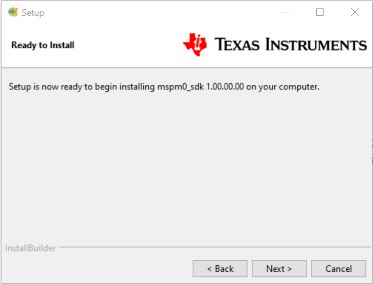
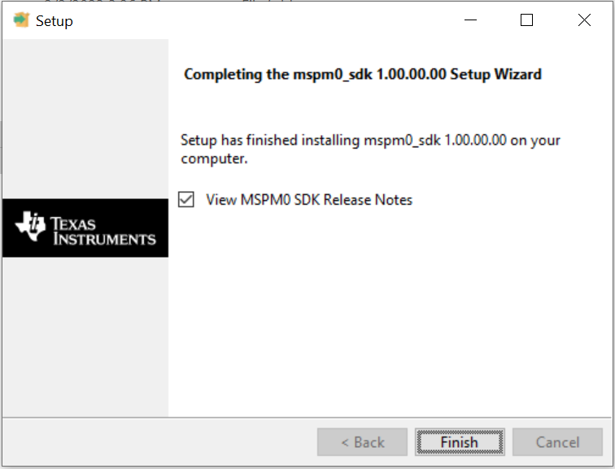
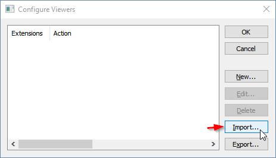
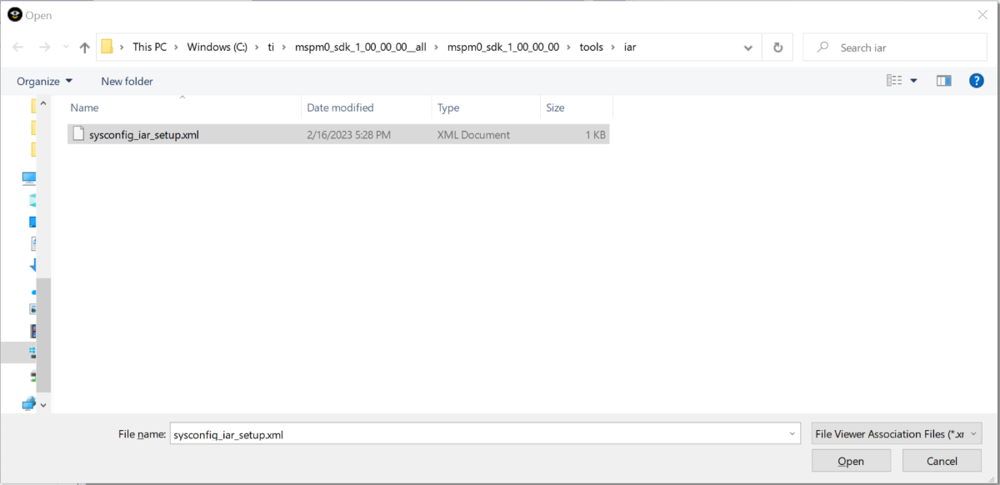
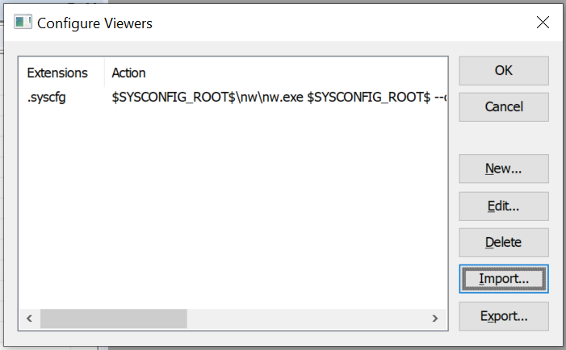
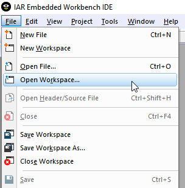
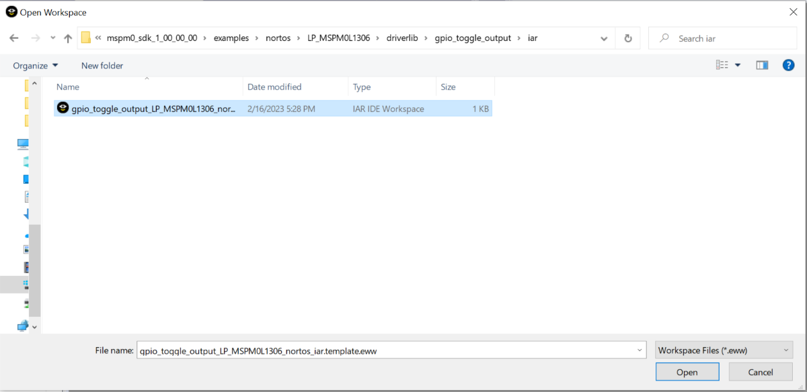
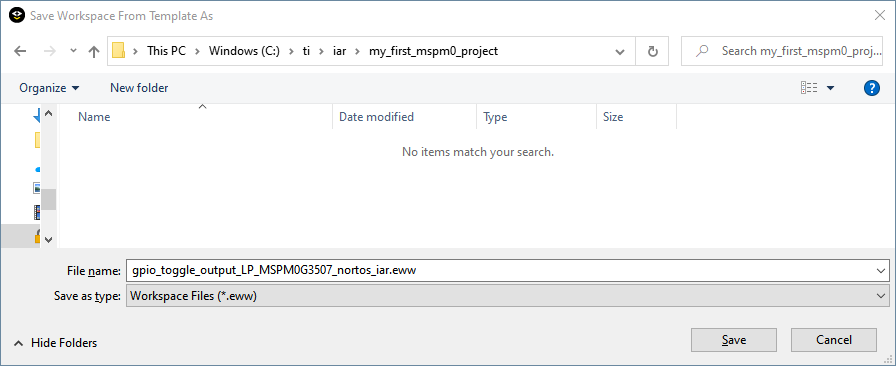
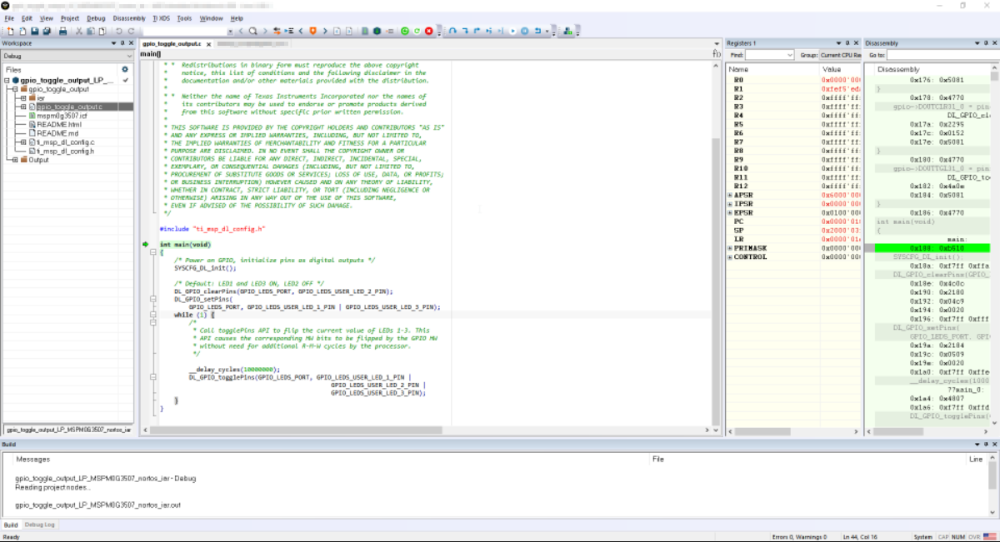

适用于 IAR 的 MSPM0 SDK 快速入门指南¶
1. 引言¶
本指南旨在帮助用户完成初始设置并演示通过 IAR 运行其第一个 MSPM0 应用。 本指南不用于说明 IAR 功能。请参阅 IAR 文档或 MSPM0 SDK 文档随附的适用于 MSPM0 MCU 的 IAR IDE 指南。
2. 先决条件¶
用户应已下载以下各项：
适用于 9.50.2 的 IAR Embedded Workbench
使用 MSPM0 Launchpad 的集成 XDS-110 编程器时，需要 TI XDS 驱动程序。有关详细信息，请访问 IAR C-SPY XDS 驱动程序版本说明。
3. 安装 MSPM0 SDK¶
下载并安装最新 MSPM0 SDK。请注意，SDK 安装程序有 Windows 版、Linux 版和 MacOS 版。以下步骤显示在 Windows 版中，但 Linux 或 MacOS 版也应遵循类似方法。
执行安装程序。点击 Next。

选择 Installation Directory 并点击 Next。注意安装目录，默认情况下为
c:\ti，SDK 将安装在C:\ti\mspm0_sdk_<version>\。此路径在以下部分中称为<MSPM0_SDK_INSTALL_DIR>。 点击 Next
 完成安装后，点击 Finish。

4. 将 MSPM0 SDK 添加到 IAR¶
在 IAR 中，需要添加最新 MSPM0 SDK 版本。 此步骤只需执行一次，或在更新 SDK 时执行。
在 IAR 中，依次点击 Tools → Configure Custom Argument Variables

点击 Global 选项卡，然后点击 Import

导航至 SDK 文件夹中的
<MSPM0_SDK_INSTALL_DIR>/tools/iar/，然后打开 MSPM0_SDK.custom_argvars。
SDK 变量现在应已安装在 IAR 中。点击“OK”关闭该窗口。
注意：请确保 MSPM0 SDK 路径和 SysConfig 路径与此 SDK 版本所需的位置和版本相匹配。如果安装了 SDK 的早期版本，请确保将路径更新为您要使用的当前版本。同样，如果在第 5 部分.为 MSPM0 安装 SysConfig 中安装的 SysConfig 路径不正确或指向早期版本，请进行修改。
5. 为 MSPM0 安装 SysConfig¶
此 SDK 包括 SysConfig 元数据的初始版本，可用于评估 MSPM0 SDK 的用户体验。
更多有关将 SysConfig 与 MSPM0 配合使用的一般信息，请参阅 SDK 工具指南中提供的将 SysConfig 与 MSPM0 配合使用。
从 ti.com 下载并安装 SysConfig 独立版本（1.20.x 或更高版本）
在 IAR 中，从菜单中依次选择 Tools → Configure Viewers。

点击 Import
 导航至 SDK 文件夹中的
<MSPM0_SDK_INSTALL_DIR>/tools/iar/，然后打开 sysconfig_iar_setup.xml。 - 独立版 SysConfig 将与 .syscfg 文件关联。点击“OK”关闭窗口。
 仔细检查 SYSCONFIG_ROOT 自定义参数变量，确认其正确指向 SysConfig 文件夹，如第 4 部分.将 MSPM0 SDK 添加到 IAR 所述。
6. 在 IAR 中导入和编译 SDK 示例¶
在 IAR 中，从菜单中依次选择 File → Open Workspace。
 在位于
<MSPM0_SDK_INSTALL_DIR>/examples/的 SDK 示例中导航至 IAR 文件夹，并打开 .eww 工作区文件。例如<MSPM0_SDK_INSTALL_DIR>/examples/nortos/LP_MSPM0L1306/driverlib/gpio_toggle_output/iar/gpio_toggle_output_LP_MSPM0L1306_nortos_iar.template.eww。 点击消息上的“OK”。

选择一个文件夹以安装示例。
 要编译示例，在工程中右键点击并选择 Make。 请注意，SysConfig 工程将在“SysConfig Generated Files”文件夹中自动生成文件。
注意：一些示例支持 SysConfig，以便更轻松地进行器件配置。有关支持 SysConfig 的示例的完整列表，请查看 MSPM0 SDK 示例指南。更多有关将 SysConfig 与 MSPM0 配合使用的一般信息，请参阅 SDK 工具指南中提供的将 SysConfig 与 MSPM0 配合使用。
点击 Download and Debug 按钮下载代码。


7. 已知问题和常见问题解答 （FAQ）¶
请参阅 SDK 中的已知问题和 FAQ。